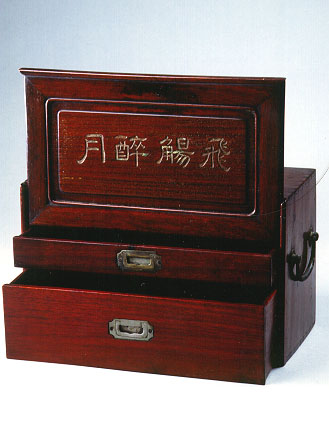

義助慰安婦 —— 李敖百件珍藏義賣藝術品（第41件） 品 名：C10. 飛觴醉月 預估價：10 萬 成交價：15 萬 說 明： 中國木雕古董盒，有把手、蓋子。「飛觴」是形容酒杯飛起來，象徵歡飲的熱鬧；「醉月」則象徵喝醉的快感。裡面小盒子裝餐飲用具，這是一件非常好的木雕工藝品。 
中國木雕古董盒，有把手、蓋子。「飛觴」是形容酒杯飛起來，象徵歡飲的熱鬧；「醉月」則象徵喝醉的快感。裡面小盒子裝餐飲用具，這是一件非常好的木雕工藝品。